BebêBebê · proposta para revisãoMantém a ponta da linha ao alcance da boca quando dorme enrolada.Design de referência
CriançaCriança · proposta para revisãoTreina estocadas com o focinho e recua ao tocar a própria linha.Design de referência
JovemJovem · proposta para revisãoPrefere deslizar rente ao obstáculo e buscar a abertura mais estreita.Design de referência
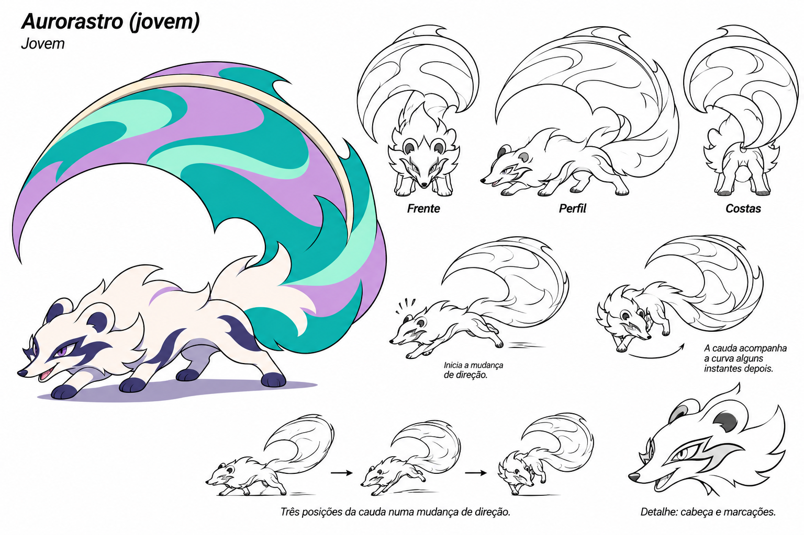Aurorastro (jovem)Jovem · proposta para revisãoEnsaiando rotas, deixa a cauda acompanhar a curva alguns instantes depois.Design de referência
GotimBebê · proposta para revisãoRecupera o equilíbrio dobrando o corpo quando a água o vira.Design de referência
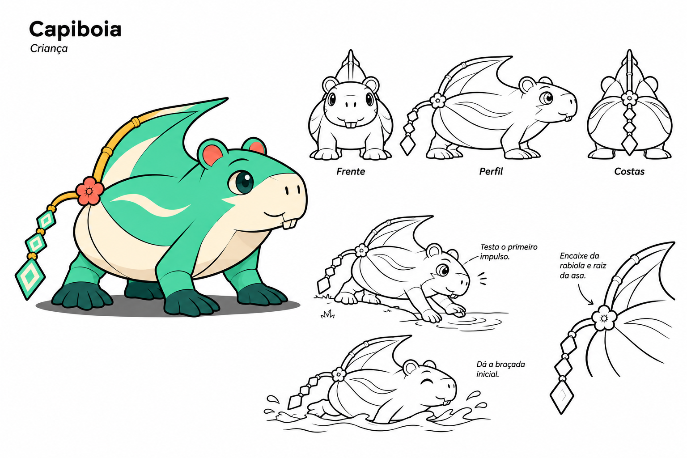CapiboiaCriança · proposta para revisãoTesta o primeiro impulso com as patas traseiras ainda apoiadas na margem.Design de referência
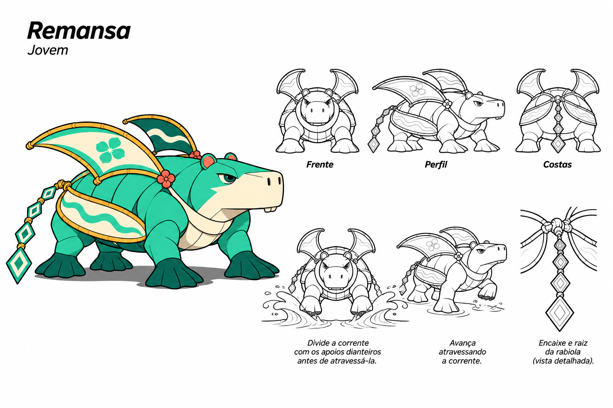RemansaJovem · proposta para revisãoUsa os apoios dianteiros para dividir a corrente antes de atravessá-la.Design de referência
B — Contensor de correntezaJovem · proposta para revisãoEntra de lado na corrente para segurar a passagem por alguns instantes.Design de referência
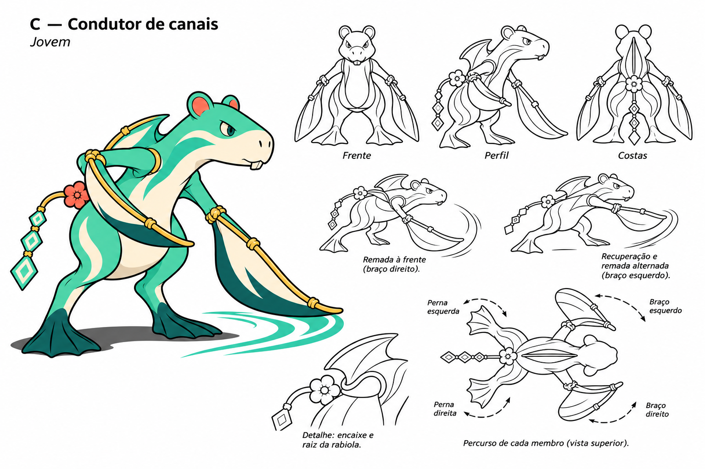C — Condutor de canaisJovem · proposta para revisãoMuda o rumo da água com remadas curtas e alternadas.Design de referência
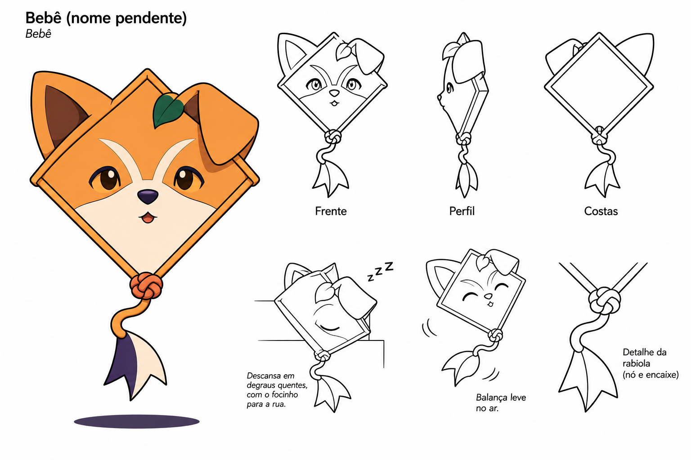Bebê (nome pendente)Bebê · proposta para revisãoDorme encostado em degraus quentes, com o focinho para o lado da rua.Design de referência
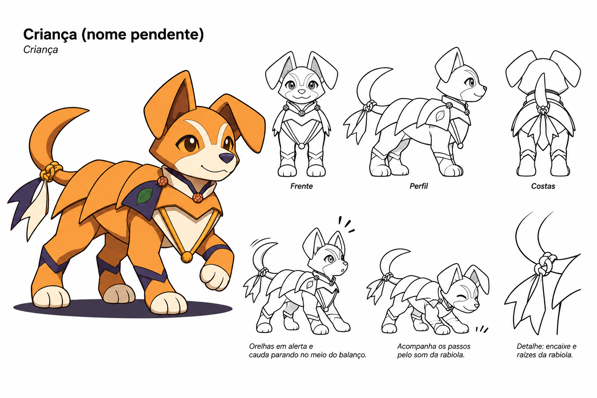Criança (nome pendente)Criança · proposta para revisãoAcompanha passos familiares pelo som da rabiola raspando no chão.Design de referência
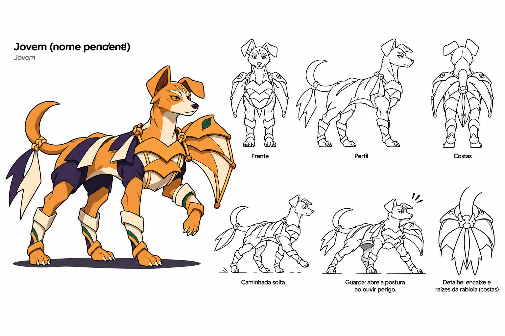Jovem (nome pendente)Jovem · proposta para revisãoEntra na frente de quem o acompanha e abre a postura ao ouvir perigo.Design de referência
Infusim (nome proposto)Bebê · proposta para revisãoSe esconde quando a primeira bolha estoura e volta para espiar.Design de referência
ChaspiralCriança (posição proposta) · proposta para revisãoAprende o ritmo esperando o instante em que a bebida para de girar.Design de referência
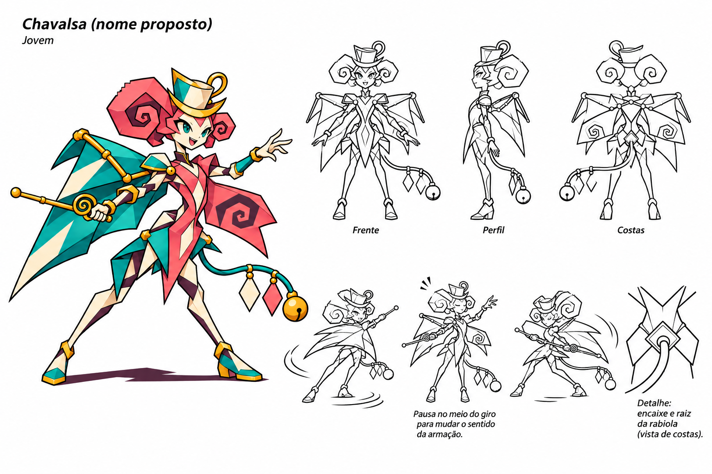Chavalsa (nome proposto)Jovem · proposta para revisãoFaz uma pausa no meio do giro para mudar o sentido da armação.Design de referência
SussurimBebê · proposta para revisãoDorme com a asa junto à boca e acorda com o próprio assobio.Design de referência
FlautrevoCriança existente · proposta para revisãoRecolhe assobios esquecidos e os devolve como trilhas de vento.Design de referência
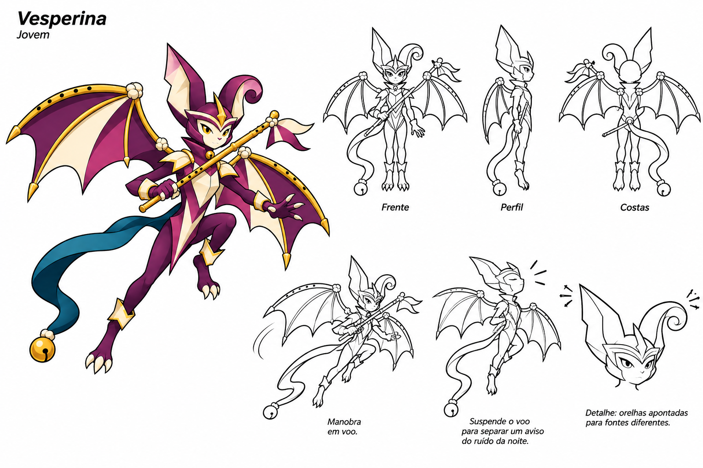VesperinaJovem arauto · proposta para revisãoSuspende o voo por um instante para separar um aviso do ruído da noite.Design de referência
Bebê (nome pendente)Bebê · proposta para revisãoRecolhe o focinho e se enrola quando ouve um ruído atrás.Design de referência
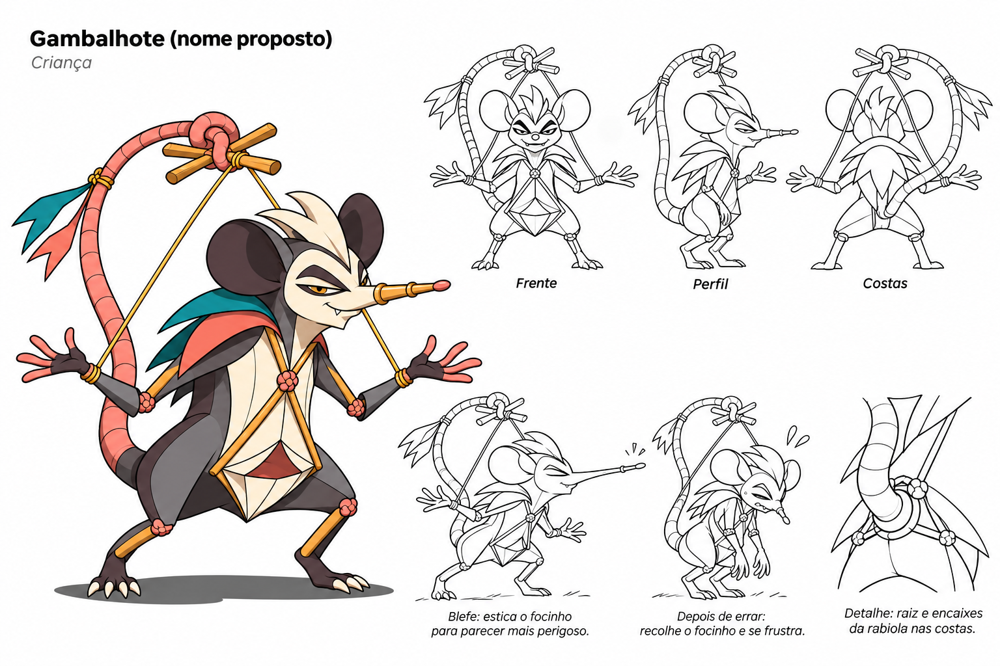Gambalhote (nome proposto)Criança · proposta para revisãoEstica o focinho para blefar e mede o alcance com a própria linha.Design de referência
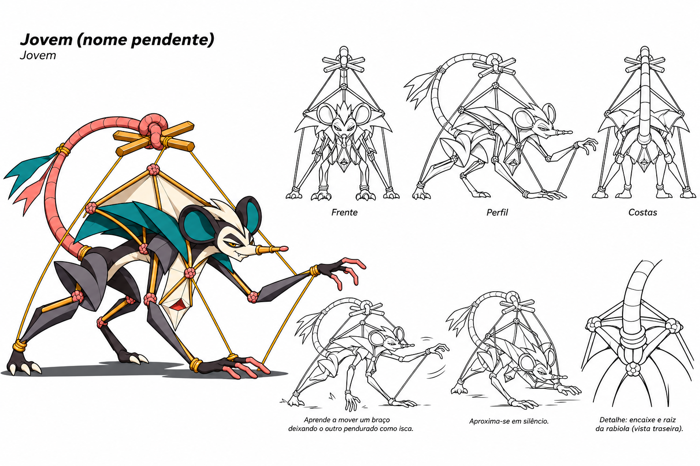Jovem (nome pendente)Jovem · proposta para revisãoAprende a mover um braço deixando o outro pendurado como isca.Design de referência
BebêBebê · proposta para revisãoPersegue a ponta da própria sombra até ela sumir.Design de referência
CriançaCriança · proposta para revisãoVira uma orelha ao menor tilintar, mesmo de olhos fechados.Design de referência
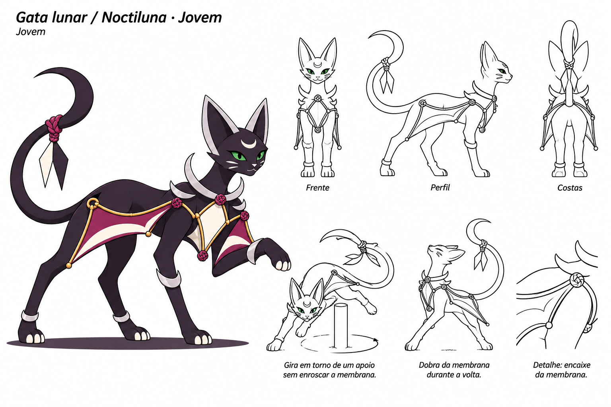JovemJovem · proposta para revisãoAprende a girar em torno de um apoio sem deixar a membrana enroscar.Design de referência
LãzinhoBebê · proposta para revisãoEnfia o focinho na própria lã e só deixa as orelhas à mostra.Design de referência
Lobo em pele de cordeiroBase · criança no estudo · proposta para revisãoPara de andar para que o velo termine de balançar antes de se esconder.Design de referência
FiafalsoJovem · proposta para revisãoDeixa o velo visível e desloca as patas pelo lado encoberto.Design de referência
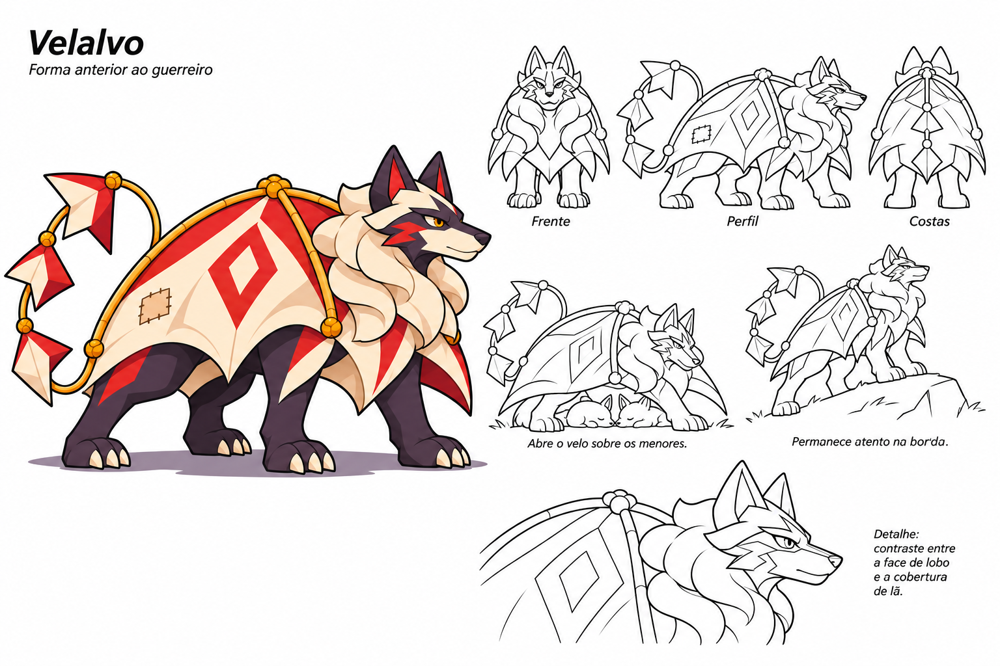VelalvoAdulto natural · proposta para revisãoAbre o velo sobre os menores e permanece atento na borda.Design de referência
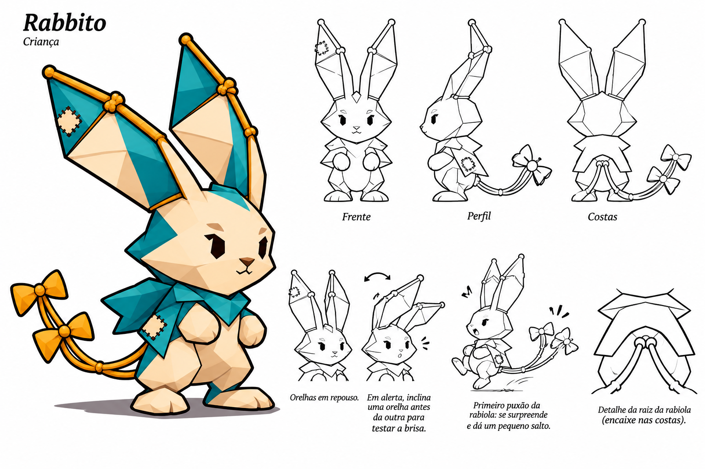RabbitoGrau II sugerido; não é cânone de estágios. · proposta para revisãoKael deu forma ao Rabbito, e a Rabiola Antiga lhe deu vida. Na brincadeira, ele inclina uma orelha antes da outra para testar a brisa.Design de referência
Rastro dos VentosHipótese de associação III/IV; sem retcon de origem. · proposta para revisãoProcura com os olhos o lugar onde vai pousar antes de esticar as pernas.Design de referência
Mestre dos FiosHipótese de associação III/IV; sem retcon de origem. · proposta para revisãoAfrouxa a própria linha quando percebe que o outro lado já está no limite.Design de referência
RiscotimBebê · proposta para revisãoEspia pela borda antes de soltar o apoio da cauda.Design de referência
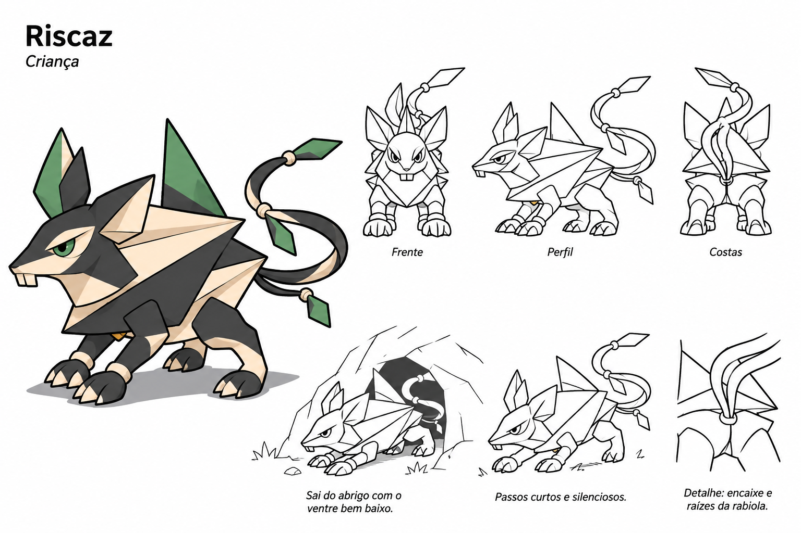RiscazCriança existente · proposta para revisãoMantém o ventre baixo e atravessa a borda de um abrigo com passos curtos.Design de referência
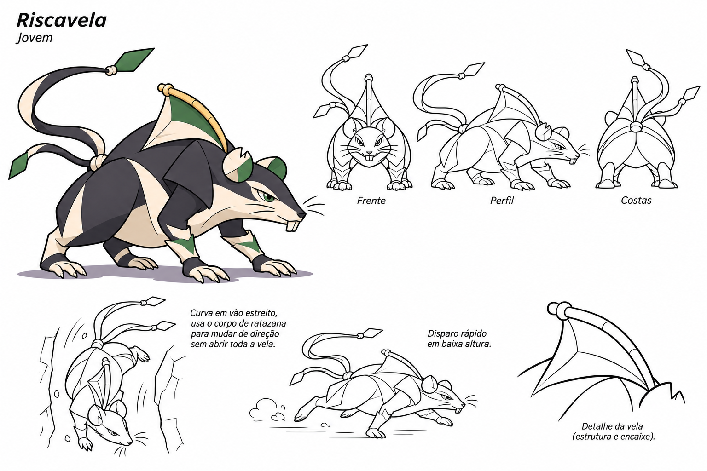RiscavelaJovem · proposta para revisãoUsa o corpo de ratazana para mudar de direção sem abrir toda a vela.Design de referência
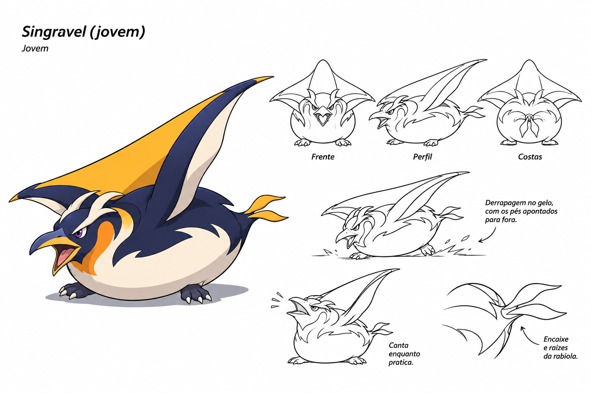Singravel (jovem)Jovem · proposta para revisãoInclina o corpo no gelo para aprender a parar sem bater o bico.Design de referência
Traminho (proposto)Bebê · proposta para revisãoSe enrola em torno da primeira dobra e espera que ela pare de vibrar.Design de referência
Tramino (proposto)Criança · proposta para revisãoChama o parceiro para seguir assim que percebe uma abertura.Design de referência
Tramassauro (proposto)Jovem · proposta para revisãoAprende a passar de lado por onde a armação ainda não cabe de frente.Design de referência
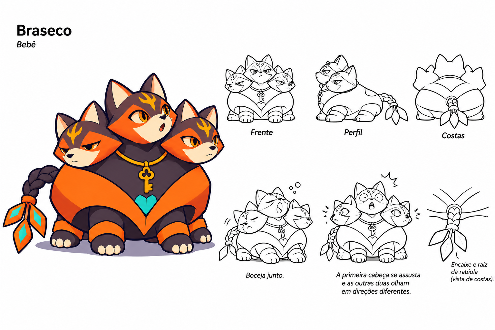BrasecoBebê · proposta para revisãoA primeira cabeça que se assusta faz as outras duas olharem em direções diferentes.Design de referência
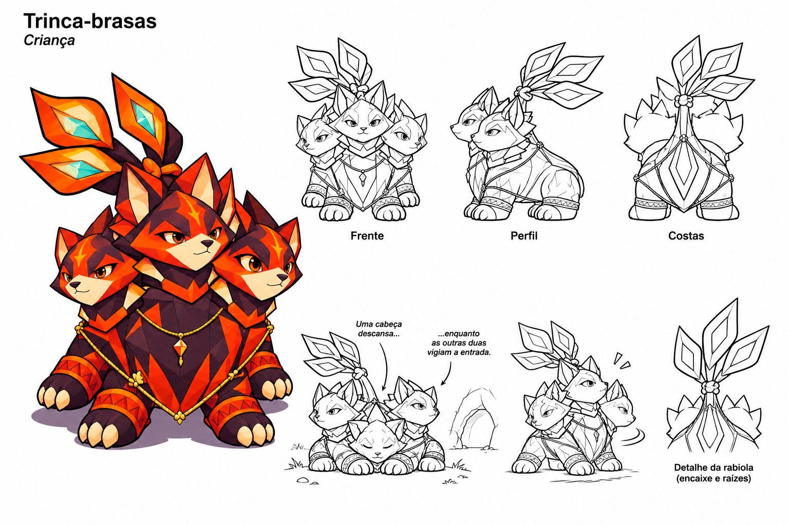Trinca-brasasCriança existente · proposta para revisãoDivide a vigília do lar sem perder o companheiro de vista.Design de referência
TrincaguardaJovem quadrúpede · proposta para revisãoFirma o peso em quatro patas para que cada cabeça acompanhe uma direção.Design de referência
BebêBebê · proposta para revisãoPendura-se num fio curto até conseguir girar sem enrolá-lo.Design de referência
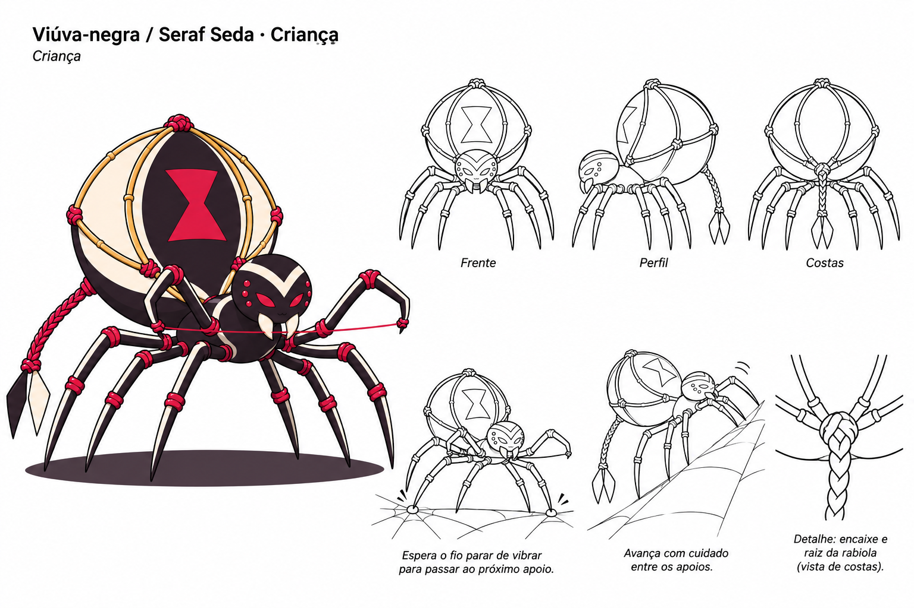CriançaCriança · proposta para revisãoEspera o fio parar de vibrar para passar ao próximo apoio.Design de referência
JovemJovem · proposta para revisãoAprende a repartir a sustentação da teia sem concentrar tudo num único nó.Design de referência
YaguimBebê · proposta para revisãoEsconde o focinho sob a ponta da faixa para dormir.Design de referência
YaguarúCriança existente · proposta para revisãoLeva as faixas junto ao corpo quando se aproxima de uma marca antiga.Design de referência
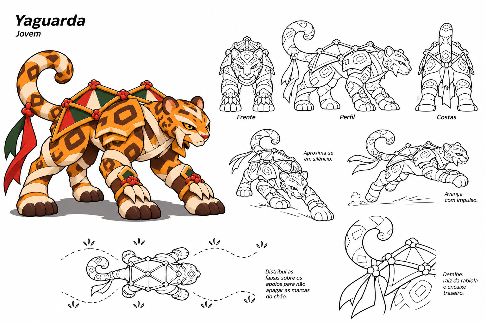YaguardaJovem · proposta para revisãoDistribui as faixas sobre os apoios para não apagar as marcas do chão.Design de referência
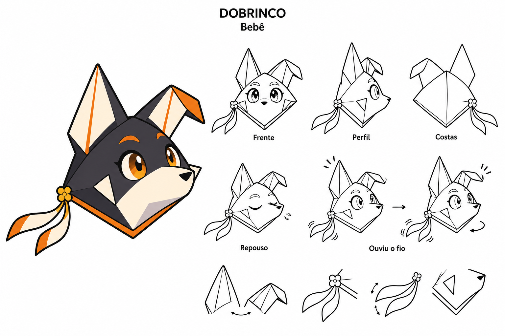DobrincoBebê · folha existenteLevanta uma orelha cristalina de cada vez ao ouvir a rabiola vibrar.Design de referência
DobrimCriança · folha existenteArrasta o primeiro fio entre as patas até aprender a carregá-lo por fora.Design de referência
DóberJovem · folha existenteAbaixa o dorso para receber o cavaleiro e espera que o peso se acomode antes de correr.Design de referência
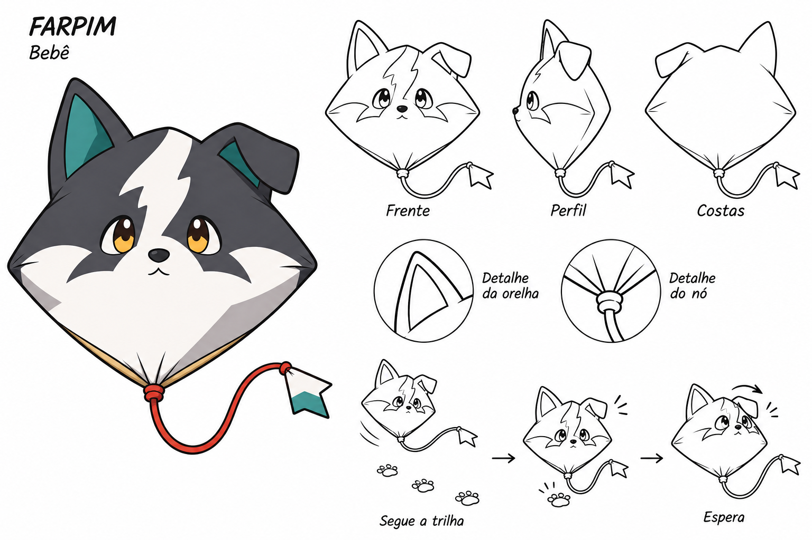FarpimBebê · folha existenteSegue pegadas até perder o cheiro e espera que alguém retorne.Design de referência
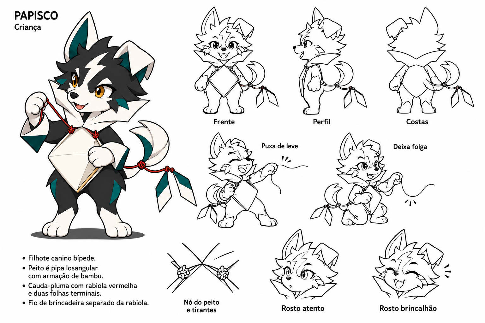PapiscoCriança · folha existentePuxa de leve para ver se a linha volta antes de brincar de novo.Design de referência
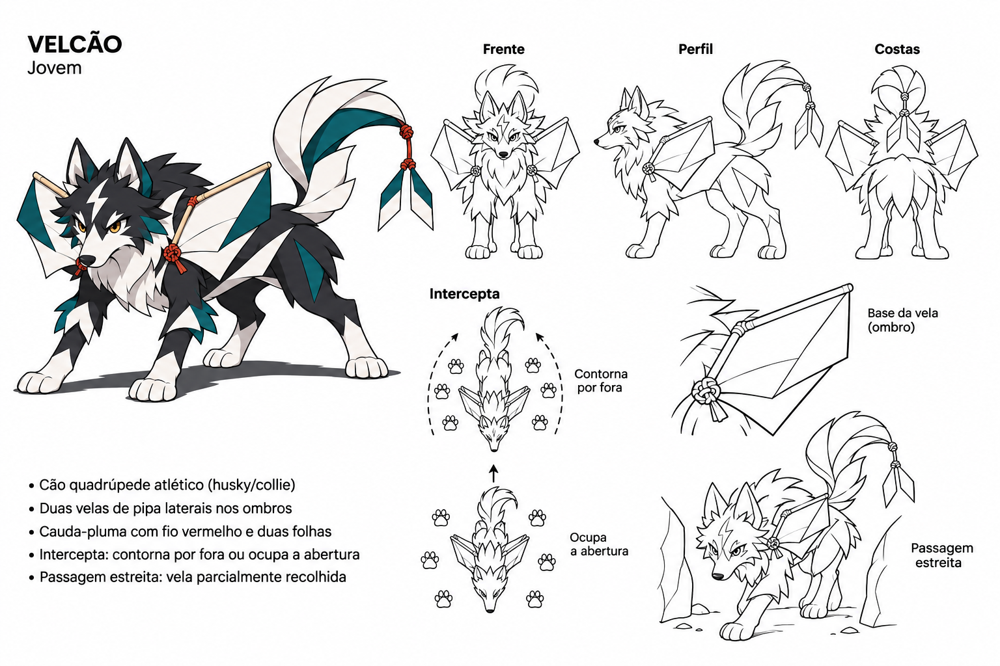VelcãoJovem · folha existenteObserva a passada dos outros e ocupa o espaço que deixam aberto.Design de referência